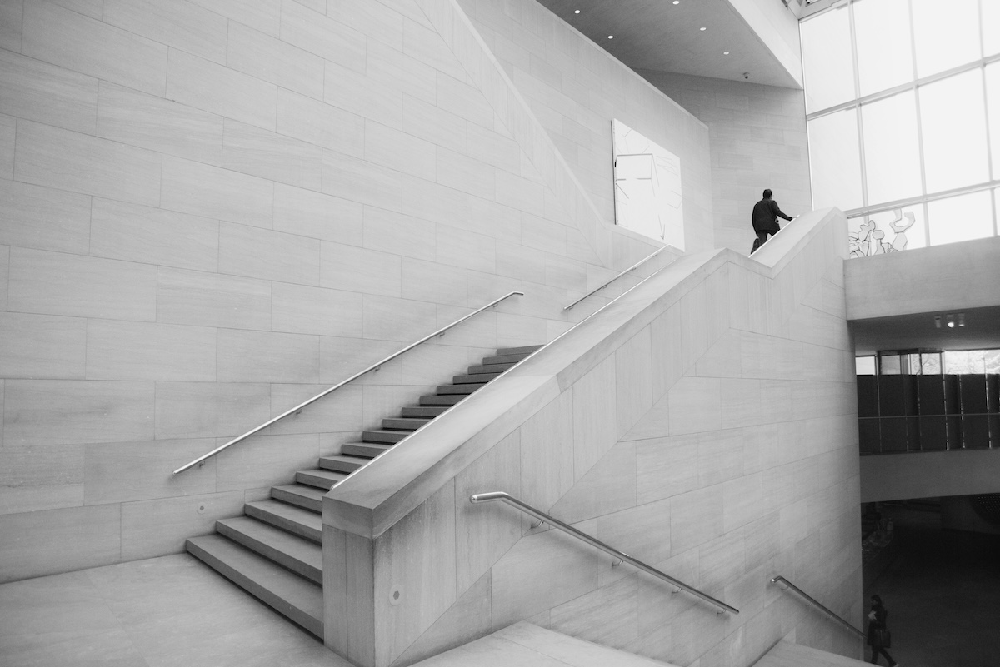

Fotoğrafta Çizgilerle Yönlendirme: Kompozisyonun Gücü
Bir fotoğraf karesine bakarken, gözlerimizin doğal bir hareketi vardır. İlk olarak, fotoğrafın en dikkat çekici unsurlarına odaklanırız. Bu hareketi yönlendiren unsurlardan biri de “çizgiler”dir. Çizgiler, kompozisyonda doğru kullanıldığında izleyicinin gözünü fotoğrafta gezdirerek bir hikaye anlatır. Bu yazıda, fotoğrafta çizgilerle nasıl yönlendirme yapabileceğinizi keşfedeceğiz.
Doğal ve Yapay Çizgiler
Çizgiler her yerde olabilir; doğada ya da insan yapımı öğelerde. Ağaçların gövdeleri, yollar, binaların köşeleri, nehirler, hatta ufuk çizgisi bile bir fotoğrafta çizgiler oluşturur. Bu çizgiler, kompozisyonunuzu güçlü bir araç haline getirir. Çizgileri doğru kullanarak izleyicinin gözünü istediğiniz noktaya yönlendirebilirsiniz.
- Doğal Çizgiler: Dağ sırtları, nehirler, deniz kıyısı gibi doğada bulunan unsurlar.

- Yapay Çizgiler: Binaların köşeleri, yollar, köprüler, demiryolları gibi insan yapımı öğeler.

Yönlendirici Çizgiler
Yönlendirici çizgiler, izleyiciyi fotoğrafın ana konusuna götürmek için kullanılan çizgilerdir. Bir yol, bir köprü ya da bir merdiven fotoğrafın derinliklerine doğru yönleniyorsa, bu izleyicinin gözünü o yöne çekecektir. Bu tür çizgiler, fotoğrafta hareket ve derinlik hissi yaratır.

Örnek: Uzun bir otoyolun sonu ufka doğru kayboluyorsa, bu çizgi izleyiciyi doğal olarak o noktaya doğru yönlendirecektir.
Diyagonal Çizgiler
Diyagonal çizgiler fotoğrafa dinamiklik katar. Bu tür çizgiler, yatay veya dikey çizgilere kıyasla daha güçlü bir görsel etkiye sahiptir çünkü izleyicinin gözünü hızlı bir şekilde fotoğrafın bir noktasından diğerine taşır. Diyagonal çizgiler genellikle hareketi, enerjiyi ve dramatik bir atmosferi ifade etmek için kullanılır.

Örnek: Bir köprünün çapraz uzanan direkleri veya bir dağın eğimli yüzeyi güçlü diyagonal çizgilerdir.
Yatay ve Dikey Çizgiler
Hareketi daha az ifade eden yatay ve dikey çizgiler, denge ve huzur hissi yaratır. Yatay çizgiler özellikle ufuk çizgisi gibi elemanlarla sakinlik duygusunu güçlendirirken, dikey çizgiler daha ciddi ve güçlü bir etki oluşturabilir.
- Yatay Çizgiler: Geniş manzara fotoğraflarında sıkça kullanılır ve dinginlik hissi yaratır.
- Dikey Çizgiler: Ağaçlar, binalar veya kuleler gibi unsurlar gücü ve sağlamlığı vurgular.
Çizgilerin Yönü ve Bakış Noktası
Çizgilerin yönü, izleyicinin gözünü nereye yönlendireceği konusunda büyük bir rol oynar. Bir çizgi, fotoğrafın ortasına doğru yönleniyorsa, göz o noktaya çekilecektir. Fotoğraflarda çizgileri kullanırken bakış açınız da son derece önemlidir. Alçak bir açıdan çekilen bir fotoğrafta çizgiler çok daha etkileyici olabilir; çünkü perspektifin dramatik bir şekilde değişmesine neden olur.

Örnek: Alçak bir açıdan çekilmiş bir gökdelen fotoğrafı, dikey çizgileri çok daha vurgulu ve etkileyici hale getirebilir.
Birden Fazla Çizgi Kullanımı
Fotoğrafınızda birden fazla çizgi olduğunda, bu çizgilerin birbirleriyle nasıl etkileşimde olduğunu düşünmelisiniz. Birbirini kesen ya da farklı yönlere giden çizgiler fotoğrafa kaos katabileceği gibi, doğru yönlendirildiğinde kompozisyonu çok daha zengin ve ilgi çekici hale getirebilir.
Örnek: Bir tren yolunun üzerine yerleştirilen köprü direkleri, hem yatay hem de dikey çizgilerle dinamik bir kompozisyon yaratabilir.
Çizgilerle Derinlik Yaratmak
Fotoğrafta çizgiler, sadece yönlendirme yapmakla kalmaz, aynı zamanda derinlik hissi yaratır. Fotoğrafın ön planından arka planına doğru uzanan çizgiler, izleyiciye fotoğrafın içine girme hissi verir. Bu da fotoğrafın izleyici üzerinde daha etkili olmasını sağlar.

Örnek: Bir patikanın ya da bir nehrin fotoğrafın önünden başlayıp uzaklarda kaybolması, fotoğrafa derinlik katmanın mükemmel bir yoludur.
Sonuç
Çizgiler, bir fotoğrafın kompozisyonunu güçlendiren en önemli unsurlardan biridir. Doğru kullanıldığında, izleyicinin dikkatini çekmek ve fotoğrafın hikayesini etkili bir şekilde anlatmak için güçlü bir araçtır. Yönlendirici, yatay, dikey ve diyagonal çizgileri nasıl kullanacağınızı öğrendikten sonra, fotoğraflarınızın çok daha ilgi çekici ve etkileyici olduğunu fark edeceksiniz. Fotoğraf çekerken çevrenize daha dikkatli bakın ve çizgileri kompozisyonunuzu zenginleştirecek şekilde kullanın.